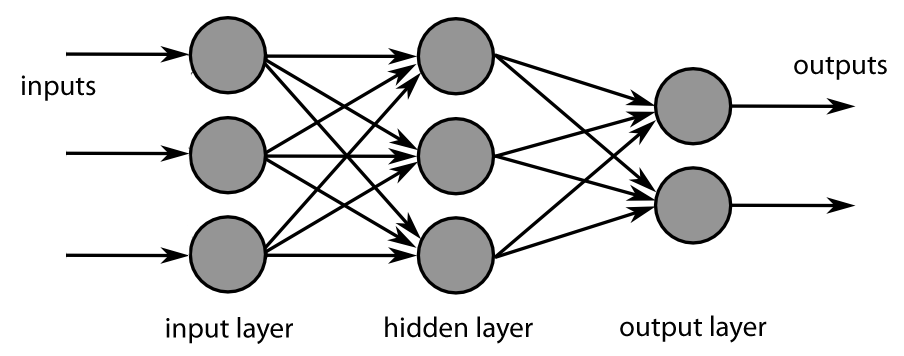

19. Neural Network¶
Chinese proverb
Sharpening the knife longer can make it easier to hack the firewood – old Chinese proverb
19.1. Feedforward Neural Network¶
19.1.1. Introduction¶
A feedforward neural network is an artificial neural network wherein connections between the units do not form a cycle. As such, it is different from recurrent neural networks.
The feedforward neural network was the first and simplest type of artificial neural network devised. In this network, the information moves in only one direction, forward (see Fig. MultiLayer Neural Network), from the input nodes, through the hidden nodes (if any) and to the output nodes. There are no cycles or loops in the network.
MultiLayer Neural Network¶
19.1.2. Demo¶
Set up spark context and SparkSession
from pyspark.sql import SparkSession
spark = SparkSession \
.builder \
.appName("Python Spark Feedforward neural network example") \
.config("spark.some.config.option", "some-value") \
.getOrCreate()
Load dataset
+-----+--------+------+-----+---------+----+-----+-------+----+---------+-------+-------+
|fixed|volatile|citric|sugar|chlorides|free|total|density| pH|sulphates|alcohol|quality|
+-----+--------+------+-----+---------+----+-----+-------+----+---------+-------+-------+
| 7.4| 0.7| 0.0| 1.9| 0.076|11.0| 34.0| 0.9978|3.51| 0.56| 9.4| 5|
| 7.8| 0.88| 0.0| 2.6| 0.098|25.0| 67.0| 0.9968| 3.2| 0.68| 9.8| 5|
| 7.8| 0.76| 0.04| 2.3| 0.092|15.0| 54.0| 0.997|3.26| 0.65| 9.8| 5|
| 11.2| 0.28| 0.56| 1.9| 0.075|17.0| 60.0| 0.998|3.16| 0.58| 9.8| 6|
| 7.4| 0.7| 0.0| 1.9| 0.076|11.0| 34.0| 0.9978|3.51| 0.56| 9.4| 5|
+-----+--------+------+-----+---------+----+-----+-------+----+---------+-------+-------+
only showing top 5 rows
change categorical variable size
# Convert to float format
def string_to_float(x):
return float(x)
#
def condition(r):
if (0<= r <= 4):
label = "low"
elif(4< r <= 6):
label = "medium"
else:
label = "high"
return label
from pyspark.sql.functions import udf
from pyspark.sql.types import StringType, DoubleType
string_to_float_udf = udf(string_to_float, DoubleType())
quality_udf = udf(lambda x: condition(x), StringType())
df= df.withColumn("quality", quality_udf("quality"))
Convert the data to dense vector
# convert the data to dense vector
def transData(data):
return data.rdd.map(lambda r: [r[-1], Vectors.dense(r[:-1])]).\
toDF(['label','features'])
from pyspark.sql import Row
from pyspark.ml.linalg import Vectors
data= transData(df)
data.show()
Split the data into training and test sets (40% held out for testing)
# Split the data into train and test
(trainingData, testData) = data.randomSplit([0.6, 0.4])
Train neural network
# specify layers for the neural network:
# input layer of size 11 (features), two intermediate of size 5 and 4
# and output of size 7 (classes)
layers = [11, 5, 4, 4, 3 , 7]
# create the trainer and set its parameters
FNN = MultilayerPerceptronClassifier(labelCol="indexedLabel", \
featuresCol="indexedFeatures",\
maxIter=100, layers=layers, \
blockSize=128, seed=1234)
# Convert indexed labels back to original labels.
labelConverter = IndexToString(inputCol="prediction", outputCol="predictedLabel",
labels=labelIndexer.labels)
# Chain indexers and forest in a Pipeline
from pyspark.ml import Pipeline
pipeline = Pipeline(stages=[labelIndexer, featureIndexer, FNN, labelConverter])
# train the model
# Train model. This also runs the indexers.
model = pipeline.fit(trainingData)
Make predictions
# Make predictions.
predictions = model.transform(testData)
# Select example rows to display.
predictions.select("features","label","predictedLabel").show(5)
Evaluation
# Select (prediction, true label) and compute test error
evaluator = MulticlassClassificationEvaluator(
labelCol="indexedLabel", predictionCol="prediction", metricName="accuracy")
accuracy = evaluator.evaluate(predictions)
print("Predictions accuracy = %g, Test Error = %g" % (accuracy,(1.0 - accuracy)))